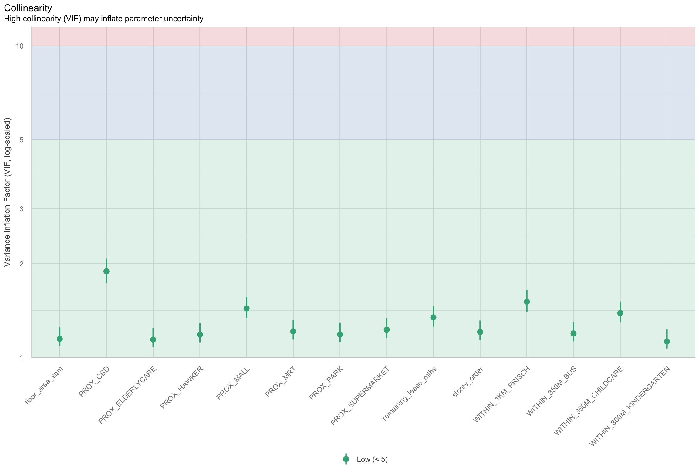

pacman::p_load(httr,jsonlite,sf, spdep, progress, tmap, tidyverse,knitr, spdep,GWmodel, rsample, SpatialML,Metrics,kableExtra, randomForestExplainer,performance)In-class 8: Take-home 3 kick-strat
1 Import the packages
- jsonlite: JSON parser and generator
- progess: Configurable Progress bars, they may include percentage, elapsed time, and/or the estimated completion time
2 Geocode HDB resale data
HDBresale <- read_csv("data/rawdata/ResaleflatpricesbasedonregistrationdatefromJan2017onwards.csv")%>%
filter(flat_type=="4 ROOM")%>%
filter(month >="2025-09" & month < "2025-10")HDBresale$street_name <- gsub("ST\\.","SAINT",HDBresale$street_name) geocode <- function(block, streetname){
base_url <- "https://www.onemap.gov.sg/api/common/elastic/search"
address <- paste(block,streetname,sep =" ")
query <- list("searchVal" = address,
"returnGeom" = "Y",
"getAddrDetails" = "N",
"pageNum" ="1")
res <- GET(base_url, query =query)
restext <- content(res, as="text")
output <- fromJSON(restext) %>%
as.data.frame %>%
select(results.LATITUDE, results.LONGITUDE)
return(output)
}HDBresale$LATITUDE <- 0
HDBresale$LONGTITUDE <- 0
for (i in 1:nrow(HDBresale)){
temp_output <- geocode(HDBresale[i,4],HDBresale[i,5])
HDBresale$LATITUDE[i] <- temp_output$results.LATITUDE
HDBresale$LONGTITUDE[i] <- temp_output$results.LONGITUDE
}write_rds(HDBresale,"data/HDBresale.rds")HDBresale <- read_rds("data/HDBresale.rds")3 Prepare Data
HDBresale_sf <- st_as_sf(HDBresale,
coords = c("LONGTITUDE", "LATITUDE"),
crs = 4326) HDBresale_sf <- HDBresale_sf %>%
st_transform(3414)# only need to count the # of preschool
preschool <- st_read("data/rawdata/PreSchoolsLocation.kml")%>%
st_transform(crs=3414)Reading layer `PRESCHOOLS_LOCATION' from data source
`/Users/johsuan/johsuanh/ISSS626-GAA/In-class/In-class-Ex08/data/rawdata/PreSchoolsLocation.kml'
using driver `KML'
Simple feature collection with 2290 features and 2 fields
Geometry type: POINT
Dimension: XYZ
Bounding box: xmin: 103.6878 ymin: 1.247759 xmax: 103.9897 ymax: 1.462134
z_range: zmin: 0 zmax: 0
Geodetic CRS: WGS 84within_350m <- st_is_within_distance(HDBresale_sf, preschool, dist=350)
HDBresale_sf <- HDBresale_sf %>%
mutate(preschool_350m = map_int(within_350m, length))4 Calibrate Predictive Model
4.1 Import Raw Data
mdata <- read_rds("data/rawdata/mdata.rds")4.2 Data Sampling
Since predictive model like random forest is computational intensive, only 10% data will be randomly selected for predictive modelling:
set.seed(1234)
HDB_sample <- mdata %>% sample_n(1500)4.3 Check of overlapping point
overlapping_points <- HDB_sample %>%
mutate(overlap = lengths(st_equals(.,.)) >1 )
# The `.` represents the data being piped inkable(head(overlapping_points%>%
filter(overlap == "TRUE")))| resale_price | floor_area_sqm | storey_order | remaining_lease_mths | PROX_CBD | PROX_ELDERLYCARE | PROX_HAWKER | PROX_MRT | PROX_PARK | PROX_GOOD_PRISCH | PROX_MALL | PROX_CHAS | PROX_SUPERMARKET | WITHIN_350M_KINDERGARTEN | WITHIN_350M_CHILDCARE | WITHIN_350M_BUS | WITHIN_1KM_PRISCH | geometry | overlap |
|---|---|---|---|---|---|---|---|---|---|---|---|---|---|---|---|---|---|---|
| 485000 | 93 | 2 | 1147 | 13.929360 | 0.2340660 | 0.9700538 | 0.1012930 | 1.1024867 | 4.336843 | 0.6343240 | 0.0456517 | 0.0456520 | 0 | 4 | 11 | 4 | POINT (35027.93 43052.26) | TRUE |
| 418000 | 93 | 5 | 1134 | 18.191900 | 2.4988467 | 0.6006831 | 0.8595443 | 0.2100242 | 8.566987 | 0.8494154 | 0.1107542 | 0.5656429 | 0 | 2 | 6 | 2 | POINT (27363.82 48032.56) | TRUE |
| 745000 | 100 | 10 | 1122 | 9.286828 | 0.3062489 | 0.4495418 | 0.8190177 | 0.7546677 | 1.504986 | 0.7323628 | 0.3062492 | 0.3097807 | 0 | 1 | 7 | 1 | POINT (21104.11 32515.89) | TRUE |
| 400000 | 94 | 3 | 1107 | 11.796591 | 1.0080227 | 0.3378548 | 0.2495496 | 0.7390616 | 2.142718 | 0.2417379 | 0.1016925 | 0.1789734 | 0 | 3 | 9 | 3 | POINT (32537.89 41573.17) | TRUE |
| 880000 | 91 | 14 | 1107 | 5.462740 | 0.3238252 | 0.1798889 | 0.4955108 | 0.8165647 | 1.994758 | 0.6820860 | 0.1852729 | 0.5442127 | 1 | 4 | 8 | 3 | POINT (29175.17 35432.24) | TRUE |
| 365000 | 91 | 5 | 993 | 13.213879 | 0.2004469 | 1.8723107 | 0.3484766 | 0.7013884 | 4.438195 | 0.4118006 | 0.1869915 | 0.4019701 | 0 | 5 | 2 | 6 | POINT (36536.14 41556.12) | TRUE |
To avoid model crashes, we need to jitter overlapped points:
HDB_sample <- HDB_sample %>%
st_jitter(amount = 1) #jitter 1 meter apartLet’s check if there are any overlapping points again:
overlapping_points <- HDB_sample %>%
mutate(overlap = lengths(st_equals(.,.)) >1 )
kable(head(overlapping_points%>%
filter(overlap == "TRUE")))| resale_price | floor_area_sqm | storey_order | remaining_lease_mths | PROX_CBD | PROX_ELDERLYCARE | PROX_HAWKER | PROX_MRT | PROX_PARK | PROX_GOOD_PRISCH | PROX_MALL | PROX_CHAS | PROX_SUPERMARKET | WITHIN_350M_KINDERGARTEN | WITHIN_350M_CHILDCARE | WITHIN_350M_BUS | WITHIN_1KM_PRISCH | geometry | overlap |
|---|
set.seed(1234)
resale_split <- initial_split(HDB_sample,
prop = 6.67/10,)
train_data <- training(resale_split)
test_data <- testing(resale_split)It’s not necessary to build mlr if we are going to build models using GWmodel.
price_mlr <- lm(resale_price ~ floor_area_sqm +
storey_order + remaining_lease_mths +
PROX_CBD + PROX_ELDERLYCARE + PROX_HAWKER +
PROX_MRT + PROX_PARK + PROX_MALL +
PROX_SUPERMARKET + WITHIN_350M_KINDERGARTEN +
WITHIN_350M_CHILDCARE + WITHIN_350M_BUS +
WITHIN_1KM_PRISCH,
data=train_data)
summary(price_mlr)
Call:
lm(formula = resale_price ~ floor_area_sqm + storey_order + remaining_lease_mths +
PROX_CBD + PROX_ELDERLYCARE + PROX_HAWKER + PROX_MRT + PROX_PARK +
PROX_MALL + PROX_SUPERMARKET + WITHIN_350M_KINDERGARTEN +
WITHIN_350M_CHILDCARE + WITHIN_350M_BUS + WITHIN_1KM_PRISCH,
data = train_data)
Residuals:
Min 1Q Median 3Q Max
-167624 -37265 -415 34811 224601
Coefficients:
Estimate Std. Error t value Pr(>|t|)
(Intercept) 115703.7 34303.4 3.373 0.000773 ***
floor_area_sqm 2778.6 292.3 9.507 < 2e-16 ***
storey_order 12698.2 1071.0 11.857 < 2e-16 ***
remaining_lease_mths 350.2 14.6 23.997 < 2e-16 ***
PROX_CBD -16225.6 630.1 -25.751 < 2e-16 ***
PROX_ELDERLYCARE -11330.9 3220.8 -3.518 0.000455 ***
PROX_HAWKER -19964.1 4021.1 -4.965 8.10e-07 ***
PROX_MRT -39652.5 5412.3 -7.326 4.92e-13 ***
PROX_PARK -15878.3 4609.2 -3.445 0.000595 ***
PROX_MALL -15910.9 6438.1 -2.471 0.013628 *
PROX_SUPERMARKET -18928.5 13305.0 -1.423 0.155150
WITHIN_350M_KINDERGARTEN 9309.7 2024.3 4.599 4.80e-06 ***
WITHIN_350M_CHILDCARE -1619.5 1181.0 -1.371 0.170572
WITHIN_350M_BUS -447.7 738.7 -0.606 0.544624
WITHIN_1KM_PRISCH -10698.0 1543.5 -6.931 7.55e-12 ***
---
Signif. codes: 0 '***' 0.001 '**' 0.01 '*' 0.05 '.' 0.1 ' ' 1
Residual standard error: 61270 on 985 degrees of freedom
Multiple R-squared: 0.7424, Adjusted R-squared: 0.7387
F-statistic: 202.7 on 14 and 985 DF, p-value: < 2.2e-16check_collinearity(price_mlr)# Check for Multicollinearity
Low Correlation
Term VIF VIF 95% CI adj. VIF Tolerance Tolerance 95% CI
floor_area_sqm 1.15 [1.09, 1.25] 1.07 0.87 [0.80, 0.92]
storey_order 1.21 [1.14, 1.31] 1.10 0.83 [0.76, 0.88]
remaining_lease_mths 1.34 [1.25, 1.46] 1.16 0.74 [0.68, 0.80]
PROX_CBD 1.89 [1.73, 2.07] 1.37 0.53 [0.48, 0.58]
PROX_ELDERLYCARE 1.14 [1.08, 1.24] 1.07 0.88 [0.80, 0.93]
PROX_HAWKER 1.18 [1.12, 1.29] 1.09 0.84 [0.78, 0.90]
PROX_MRT 1.21 [1.14, 1.32] 1.10 0.83 [0.76, 0.88]
PROX_PARK 1.19 [1.12, 1.29] 1.09 0.84 [0.77, 0.89]
PROX_MALL 1.44 [1.34, 1.57] 1.20 0.70 [0.64, 0.75]
PROX_SUPERMARKET 1.23 [1.15, 1.33] 1.11 0.82 [0.75, 0.87]
WITHIN_350M_KINDERGARTEN 1.12 [1.07, 1.23] 1.06 0.89 [0.81, 0.94]
WITHIN_350M_CHILDCARE 1.39 [1.29, 1.51] 1.18 0.72 [0.66, 0.77]
WITHIN_350M_BUS 1.19 [1.13, 1.30] 1.09 0.84 [0.77, 0.89]
WITHIN_1KM_PRISCH 1.51 [1.40, 1.65] 1.23 0.66 [0.61, 0.71]mlr.vif <- check_collinearity(price_mlr)
par(bg="#f6f6f6")
plot(mlr.vif) +
theme(axis.text.x = element_text(angle = 45, hjust = 1))
4.4 Import GWR model from Hands-on Ex08
gwr_adaptive <- read_rds("data/model/gwr_adaptive.rds")
gwr_adaptive ***********************************************************************
* Package GWmodel *
***********************************************************************
Program starts at: 2025-10-23 23:18:48.222266
Call:
gwr.basic(formula = resale_price ~ floor_area_sqm + storey_order +
remaining_lease_mths + PROX_CBD + PROX_ELDERLYCARE + PROX_HAWKER +
PROX_MRT + PROX_PARK + PROX_MALL + PROX_SUPERMARKET + WITHIN_350M_KINDERGARTEN +
WITHIN_350M_CHILDCARE + WITHIN_350M_BUS + WITHIN_1KM_PRISCH,
data = train_data, bw = bw_adaptive, kernel = "gaussian",
adaptive = TRUE, longlat = FALSE)
Dependent (y) variable: resale_price
Independent variables: floor_area_sqm storey_order remaining_lease_mths PROX_CBD PROX_ELDERLYCARE PROX_HAWKER PROX_MRT PROX_PARK PROX_MALL PROX_SUPERMARKET WITHIN_350M_KINDERGARTEN WITHIN_350M_CHILDCARE WITHIN_350M_BUS WITHIN_1KM_PRISCH
Number of data points: 10335
***********************************************************************
* Results of Global Regression *
***********************************************************************
Call:
lm(formula = formula, data = data)
Residuals:
Min 1Q Median 3Q Max
-205193 -39120 -1930 36545 472355
Coefficients:
Estimate Std. Error t value Pr(>|t|)
(Intercept) 107601.073 10601.261 10.150 < 2e-16 ***
floor_area_sqm 2780.698 90.579 30.699 < 2e-16 ***
storey_order 14299.298 339.115 42.167 < 2e-16 ***
remaining_lease_mths 344.490 4.592 75.027 < 2e-16 ***
PROX_CBD -16930.196 201.254 -84.124 < 2e-16 ***
PROX_ELDERLYCARE -14441.025 994.867 -14.516 < 2e-16 ***
PROX_HAWKER -19265.648 1273.597 -15.127 < 2e-16 ***
PROX_MRT -32564.272 1744.232 -18.670 < 2e-16 ***
PROX_PARK -5712.625 1483.885 -3.850 0.000119 ***
PROX_MALL -14717.388 2007.818 -7.330 2.47e-13 ***
PROX_SUPERMARKET -26881.938 4189.624 -6.416 1.46e-10 ***
WITHIN_350M_KINDERGARTEN 8520.472 632.812 13.464 < 2e-16 ***
WITHIN_350M_CHILDCARE -4510.650 354.015 -12.741 < 2e-16 ***
WITHIN_350M_BUS 813.493 222.574 3.655 0.000259 ***
WITHIN_1KM_PRISCH -8010.834 491.512 -16.298 < 2e-16 ***
---Significance stars
Signif. codes: 0 '***' 0.001 '**' 0.01 '*' 0.05 '.' 0.1 ' ' 1
Residual standard error: 61650 on 10320 degrees of freedom
Multiple R-squared: 0.7373
Adjusted R-squared: 0.737
F-statistic: 2069 on 14 and 10320 DF, p-value: < 2.2e-16
***Extra Diagnostic information
Residual sum of squares: 3.922202e+13
Sigma(hat): 61610.08
AIC: 257320.2
AICc: 257320.3
BIC: 247249
***********************************************************************
* Results of Geographically Weighted Regression *
***********************************************************************
*********************Model calibration information*********************
Kernel function: gaussian
Adaptive bandwidth: 40 (number of nearest neighbours)
Regression points: the same locations as observations are used.
Distance metric: Euclidean distance metric is used.
****************Summary of GWR coefficient estimates:******************
Min. 1st Qu. Median 3rd Qu.
Intercept -3.2594e+08 -4.7727e+05 -8.3004e+03 5.5025e+05
floor_area_sqm -2.8714e+04 1.4475e+03 2.3011e+03 3.3900e+03
storey_order 3.3186e+03 8.5899e+03 1.0826e+04 1.3397e+04
remaining_lease_mths -1.4431e+03 2.6063e+02 3.9048e+02 5.2865e+02
PROX_CBD -1.0837e+07 -5.7697e+04 -1.3787e+04 2.6552e+04
PROX_ELDERLYCARE -3.2291e+07 -4.0643e+04 1.0562e+04 6.1054e+04
PROX_HAWKER -2.3985e+08 -5.1365e+04 3.0026e+03 6.4287e+04
PROX_MRT -1.1660e+07 -1.0488e+05 -4.9373e+04 5.1037e+03
PROX_PARK -6.5961e+06 -4.8671e+04 -8.8128e+02 5.3498e+04
PROX_MALL -1.8112e+07 -7.4238e+04 -1.3982e+04 4.9779e+04
PROX_SUPERMARKET -4.5761e+06 -6.3461e+04 -1.7429e+04 3.5616e+04
WITHIN_350M_KINDERGARTEN -4.1881e+05 -6.0040e+03 9.0209e+01 4.7127e+03
WITHIN_350M_CHILDCARE -1.0273e+05 -2.2375e+03 2.6668e+02 2.6388e+03
WITHIN_350M_BUS -1.1757e+05 -1.4719e+03 1.1626e+02 1.7584e+03
WITHIN_1KM_PRISCH -6.6465e+05 -5.5959e+03 2.6916e+02 5.7500e+03
Max.
Intercept 1.6493e+08
floor_area_sqm 5.0907e+04
storey_order 2.9537e+04
remaining_lease_mths 1.8119e+03
PROX_CBD 2.2489e+07
PROX_ELDERLYCARE 8.2444e+07
PROX_HAWKER 5.9654e+06
PROX_MRT 2.0189e+08
PROX_PARK 1.5224e+07
PROX_MALL 1.0443e+07
PROX_SUPERMARKET 3.8330e+06
WITHIN_350M_KINDERGARTEN 6.6799e+05
WITHIN_350M_CHILDCARE 1.0802e+05
WITHIN_350M_BUS 3.7313e+04
WITHIN_1KM_PRISCH 5.0262e+05
************************Diagnostic information*************************
Number of data points: 10335
Effective number of parameters (2trace(S) - trace(S'S)): 1730.101
Effective degrees of freedom (n-2trace(S) + trace(S'S)): 8604.899
AICc (GWR book, Fotheringham, et al. 2002, p. 61, eq 2.33): 238871.8
AIC (GWR book, Fotheringham, et al. 2002,GWR p. 96, eq. 4.22): 237036.9
BIC (GWR book, Fotheringham, et al. 2002,GWR p. 61, eq. 2.34): 238209
Residual sum of squares: 4.829177e+12
R-square value: 0.9676571
Adjusted R-square value: 0.9611535
***********************************************************************
Program stops at: 2025-10-23 23:19:28.230634 The R-squared of global model (using full dataset) is 0.73 while the R-squared of localized geospatial model (using neighbors’ dataset only) is 0.97, suggesting including geospatial info is important for predictive model.
For explanatory model, we need to look at p-value, R-squared, AIC for comparison between global and local models.
we can plot the significance of the variables using resource below:
https://www.jstatsoft.org/article/view/v063i17
gwr_adaptive ***********************************************************************
* Package GWmodel *
***********************************************************************
Program starts at: 2025-10-23 23:18:48.222266
Call:
gwr.basic(formula = resale_price ~ floor_area_sqm + storey_order +
remaining_lease_mths + PROX_CBD + PROX_ELDERLYCARE + PROX_HAWKER +
PROX_MRT + PROX_PARK + PROX_MALL + PROX_SUPERMARKET + WITHIN_350M_KINDERGARTEN +
WITHIN_350M_CHILDCARE + WITHIN_350M_BUS + WITHIN_1KM_PRISCH,
data = train_data, bw = bw_adaptive, kernel = "gaussian",
adaptive = TRUE, longlat = FALSE)
Dependent (y) variable: resale_price
Independent variables: floor_area_sqm storey_order remaining_lease_mths PROX_CBD PROX_ELDERLYCARE PROX_HAWKER PROX_MRT PROX_PARK PROX_MALL PROX_SUPERMARKET WITHIN_350M_KINDERGARTEN WITHIN_350M_CHILDCARE WITHIN_350M_BUS WITHIN_1KM_PRISCH
Number of data points: 10335
***********************************************************************
* Results of Global Regression *
***********************************************************************
Call:
lm(formula = formula, data = data)
Residuals:
Min 1Q Median 3Q Max
-205193 -39120 -1930 36545 472355
Coefficients:
Estimate Std. Error t value Pr(>|t|)
(Intercept) 107601.073 10601.261 10.150 < 2e-16 ***
floor_area_sqm 2780.698 90.579 30.699 < 2e-16 ***
storey_order 14299.298 339.115 42.167 < 2e-16 ***
remaining_lease_mths 344.490 4.592 75.027 < 2e-16 ***
PROX_CBD -16930.196 201.254 -84.124 < 2e-16 ***
PROX_ELDERLYCARE -14441.025 994.867 -14.516 < 2e-16 ***
PROX_HAWKER -19265.648 1273.597 -15.127 < 2e-16 ***
PROX_MRT -32564.272 1744.232 -18.670 < 2e-16 ***
PROX_PARK -5712.625 1483.885 -3.850 0.000119 ***
PROX_MALL -14717.388 2007.818 -7.330 2.47e-13 ***
PROX_SUPERMARKET -26881.938 4189.624 -6.416 1.46e-10 ***
WITHIN_350M_KINDERGARTEN 8520.472 632.812 13.464 < 2e-16 ***
WITHIN_350M_CHILDCARE -4510.650 354.015 -12.741 < 2e-16 ***
WITHIN_350M_BUS 813.493 222.574 3.655 0.000259 ***
WITHIN_1KM_PRISCH -8010.834 491.512 -16.298 < 2e-16 ***
---Significance stars
Signif. codes: 0 '***' 0.001 '**' 0.01 '*' 0.05 '.' 0.1 ' ' 1
Residual standard error: 61650 on 10320 degrees of freedom
Multiple R-squared: 0.7373
Adjusted R-squared: 0.737
F-statistic: 2069 on 14 and 10320 DF, p-value: < 2.2e-16
***Extra Diagnostic information
Residual sum of squares: 3.922202e+13
Sigma(hat): 61610.08
AIC: 257320.2
AICc: 257320.3
BIC: 247249
***********************************************************************
* Results of Geographically Weighted Regression *
***********************************************************************
*********************Model calibration information*********************
Kernel function: gaussian
Adaptive bandwidth: 40 (number of nearest neighbours)
Regression points: the same locations as observations are used.
Distance metric: Euclidean distance metric is used.
****************Summary of GWR coefficient estimates:******************
Min. 1st Qu. Median 3rd Qu.
Intercept -3.2594e+08 -4.7727e+05 -8.3004e+03 5.5025e+05
floor_area_sqm -2.8714e+04 1.4475e+03 2.3011e+03 3.3900e+03
storey_order 3.3186e+03 8.5899e+03 1.0826e+04 1.3397e+04
remaining_lease_mths -1.4431e+03 2.6063e+02 3.9048e+02 5.2865e+02
PROX_CBD -1.0837e+07 -5.7697e+04 -1.3787e+04 2.6552e+04
PROX_ELDERLYCARE -3.2291e+07 -4.0643e+04 1.0562e+04 6.1054e+04
PROX_HAWKER -2.3985e+08 -5.1365e+04 3.0026e+03 6.4287e+04
PROX_MRT -1.1660e+07 -1.0488e+05 -4.9373e+04 5.1037e+03
PROX_PARK -6.5961e+06 -4.8671e+04 -8.8128e+02 5.3498e+04
PROX_MALL -1.8112e+07 -7.4238e+04 -1.3982e+04 4.9779e+04
PROX_SUPERMARKET -4.5761e+06 -6.3461e+04 -1.7429e+04 3.5616e+04
WITHIN_350M_KINDERGARTEN -4.1881e+05 -6.0040e+03 9.0209e+01 4.7127e+03
WITHIN_350M_CHILDCARE -1.0273e+05 -2.2375e+03 2.6668e+02 2.6388e+03
WITHIN_350M_BUS -1.1757e+05 -1.4719e+03 1.1626e+02 1.7584e+03
WITHIN_1KM_PRISCH -6.6465e+05 -5.5959e+03 2.6916e+02 5.7500e+03
Max.
Intercept 1.6493e+08
floor_area_sqm 5.0907e+04
storey_order 2.9537e+04
remaining_lease_mths 1.8119e+03
PROX_CBD 2.2489e+07
PROX_ELDERLYCARE 8.2444e+07
PROX_HAWKER 5.9654e+06
PROX_MRT 2.0189e+08
PROX_PARK 1.5224e+07
PROX_MALL 1.0443e+07
PROX_SUPERMARKET 3.8330e+06
WITHIN_350M_KINDERGARTEN 6.6799e+05
WITHIN_350M_CHILDCARE 1.0802e+05
WITHIN_350M_BUS 3.7313e+04
WITHIN_1KM_PRISCH 5.0262e+05
************************Diagnostic information*************************
Number of data points: 10335
Effective number of parameters (2trace(S) - trace(S'S)): 1730.101
Effective degrees of freedom (n-2trace(S) + trace(S'S)): 8604.899
AICc (GWR book, Fotheringham, et al. 2002, p. 61, eq 2.33): 238871.8
AIC (GWR book, Fotheringham, et al. 2002,GWR p. 96, eq. 4.22): 237036.9
BIC (GWR book, Fotheringham, et al. 2002,GWR p. 61, eq. 2.34): 238209
Residual sum of squares: 4.829177e+12
R-square value: 0.9676571
Adjusted R-square value: 0.9611535
***********************************************************************
Program stops at: 2025-10-23 23:19:28.230634